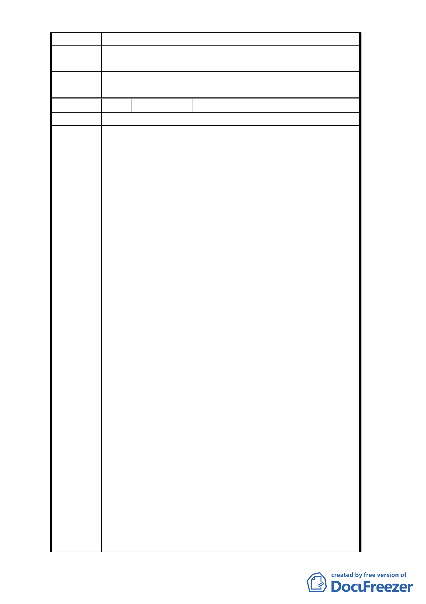

六種使用用途細部計畫案，敬請惠予協助辦理。
擬建議處
理意見
同編號3回覆內容。
委
決
員
會
議
同編號1。
編 號 3-C 陳情人 京○城股份有限公司（102.12.05）
陳情位置
一、依 102 年 9 月 12 日府都規字第 10235776100 號公告
公開展覽之陳情，再行補充陳情說明。
二、本案基地已不符都市發展所需機能，應予重新檢討
審議。
京華城基地（西松段三小段 156 地號）近年來之發
展已與地區發展所需機能不符（80 年代規劃為中山
學園，現已劃定為巨蛋專區及文創園），且目前市府
公展草案內容將失去京華城基地與西北側土地結合
大規模更新開發之可能性，故希冀本計畫內容再檢
討修正，保留開發彈性，將開發方式訂為「都市更
新」，劃定本案街廓為更新地區，未來京華城基地與
西北側鄰地仍有整體更新規劃，分區開發之可能性
。
三、京華城基地再開發本公司將本於對台北市土地的熱
愛及企業責任，以公益為先創造都市優美環境為本
，提供必要性回饋，締造台北市民三贏局面。
陳情理由
京華城基地再開發計畫（詳附件一）仍在台北都市
發展局研擬中，未來倘能依新修訂之都市計畫再開
發，本公司除了聘請得過普立茲獎建築大師規劃設
計，以提升台北市東區整體都市風貌外，亦可透過
更新方式提供興建一公共建築物回饋台北市民，准
此本案再次開發，不但能帶動附近居民更新意願，
更能創造地區更多就業機會，並能增加政府稅收，
創造三贏局面。
四、本衛廓土地 80 年公告實施之都市計畫，應請台北市
政府有關單位及都委會重新研讀當年審議相關歷史
文件，以釐清案情。
1.近來無論台北市政府抑或媒體皆未對本基地前都
市計畫變更之歷史文件詳加探究，即引用錯誤資
訊並斷章取義，造成社會大眾之誤解，延宕本案
之推動。為導正視聽，應請台北市政府有關單位
及都委會重新研讀其過去都市計畫審議時相關歷
史文件，以利釐清案情。
- 40 -